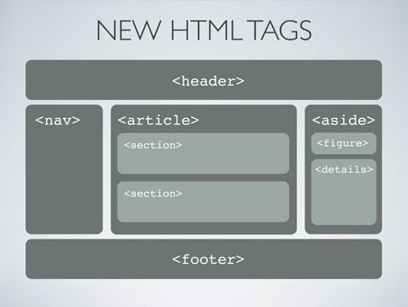

HTML ( Hypertext Markup Language ) is the standard markup language for creating web pages. HTML5 is the fifth iteration and the latest version of the HTML standard. It offers new features that provide not only rich media support, but also enhance support for creating web applications that can interact with the user's local data, and servers more easily and effectively than was possible previously.
HTML5
The latest version of HTML includes a lot of new features. The major ones are:
- ACCESSIBILITY
HTML5 makes creating accessible sites easier basically for semantics and ARIA. The HTML5 headings like <header>, <footer>, <nav>, <section>, <aside>, etc. allow screen readers to easily access content. Before, your screen readers had no way to determine what a given <div> was even if you assigned it an ID or Class. With new semantic tags screen readers can better examine the HTML document and create a better experience for those who use them.
- AUDIO-VIDEO SUPPORT
No more need to use the <embed> and <object> tags and assign a huge list of parameters just to get the audio and videos visible and working correctly.But with HTML5, add audio and videos directly using <audio> and <video> tags.HTML5’s video and audio tags basically treat them as images; <video src=”url”/>.
- ANIMATIONS (2D & 3D)
With HTML5 alone, we can now create websites with interactive features such as images, charts, and animations.
- BETTER STORAGE
HTML5 allows the new local storage feature. This allows to make web apps possible without using third party plugins. With this the user’s browser allows to easily create app features like: storing user information, the ability to cache data, and the ability to load the user’s previous application state.
- BROWSER SUPPORT
HTML5 support all major browser support :
~ Google Chrome
~ Mozilla Firefox
~ Safari
~ Opera
~ IE 10+
- HTML5 also include updated Javascript and CSS3. This also includes Canvas API.
- Some of the new HTML5 tags look like :

- Visit W3Schools for more information.
DRUPAL'S HTML5 INITIATIVE

The main goal of the initiative is to implement HTML5 in Drupal so that the end users gets the most benefit of it. Through the initiative, Drupal will be introducing new features to most of the themes and templates and implementing new input types and elements.
The initiative was launched on May 18, 2011 by Dries Buytaert and Jacine Luisi was made the initiative owner for the Drupal8 HTML5 Initiative.
The group organizers of the initiative are :
~ bleen18
~ Jacine
~ janlampton
~ mitchell
~ ericduran
~ jhood
Discussions and meetings are held on regular basis to discuss what to should be implemented on Drupal8. The plan is to create responsive themes with HTML5, CSS3 , JQuery 2.0 and to generate dynamic websites with the integration of CSS3 including new transitions and animations.
So, that the themes and websites are mobile-friendly as mobile is becoming one of the used device to access the World Wide Web.
Also Drupal8 do not support IE less than 9 which helps in minimising the code for the modern browsers, i.e- less size in CSS and JS will be there. Therefore all this will make the Drupal8 experience much better for everyone.
- HOW TO CONTRIBUTE ?
- Anyone can contribute by just joing the Group Page and contributing over there.
- Moreover, anyone can follow the Twitter Page.
- The IRC Channel is #drupal-html5 where anyone can attend the Initiative meetings.
For furthur details, vist :
- Dies Buytaert's Blog
- Janice Luisi's Blog